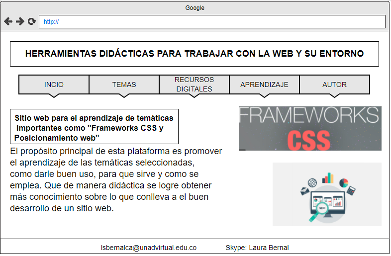

El propósito principal de esta plataforma es promover el aprendizaje de las temáticas seleccionadas, como darle buen uso, para que sirve y como se emplea. Que de manera didáctica se logre obtener más conocimiento sobre lo que conlleva a el buen desarrollo de un sitio web.
